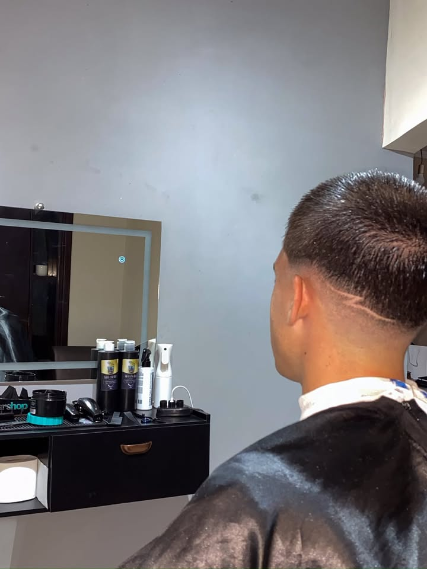
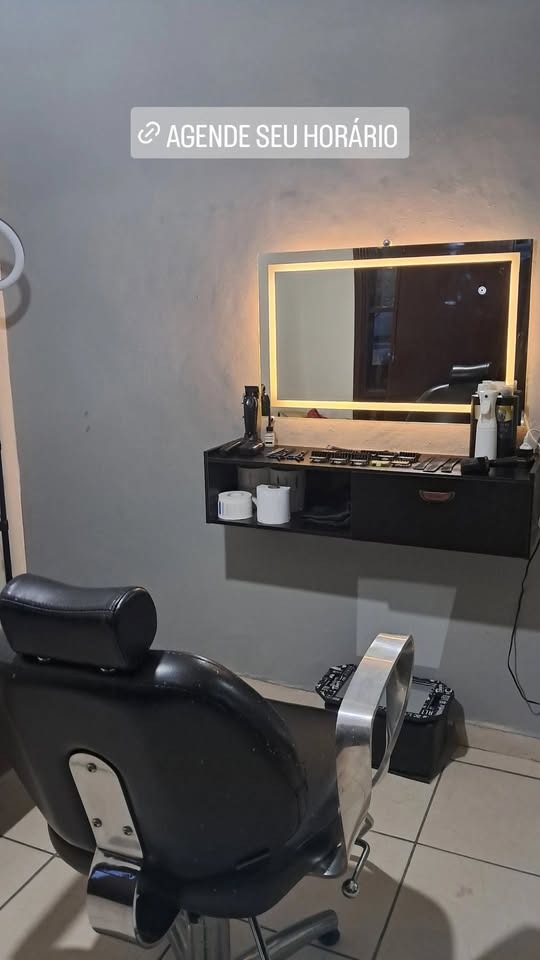
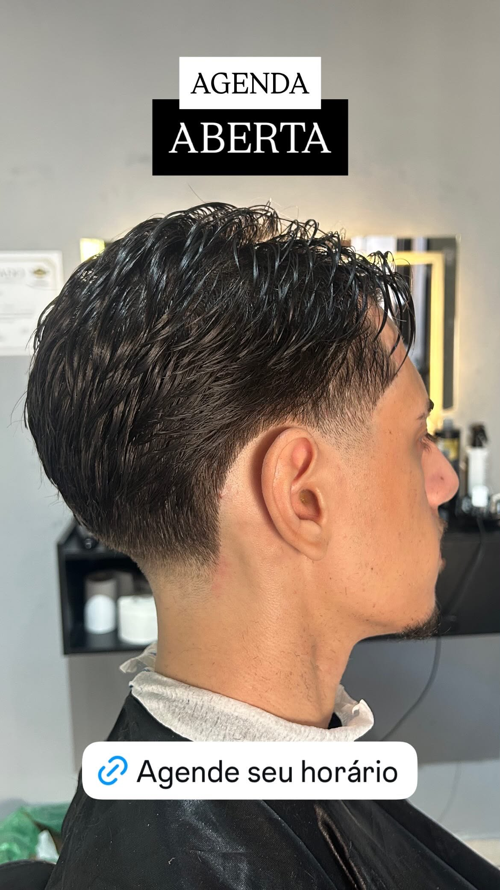
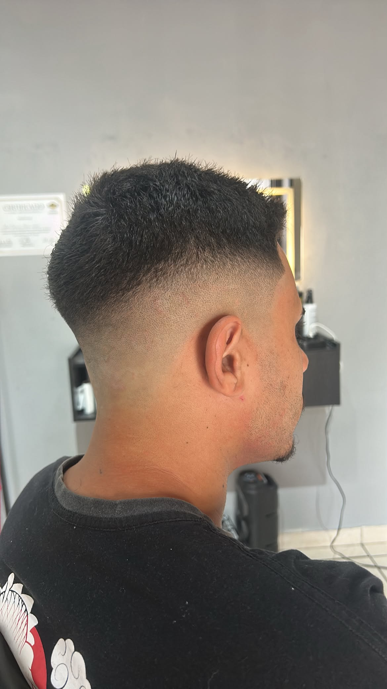

Por trás da cadeira da A Tupi Barber está Gabriel Tupinambá, barbeiro com experiência consolidada em corte de cabelo masculino. Depois de anos aperfeiçoando a técnica — do corte clássico ao degradê mais moderno — Gabriel decidiu abrir seu próprio espaço no Jardim das Flores.
A barbearia é recente, mas a bagagem não é: cada atendimento carrega o cuidado de quem entende que um bom corte muda o dia de qualquer pessoa. Aqui, o objetivo é simples — te receber bem, ouvir o que você quer e entregar um resultado à altura.
Estrutura nova, equipamentos cuidados e um cantinho reservado só para você.

Estação de atendimento
Atenção em cada detalhe
Precisão no acabamentoCada corte é finalizado com atenção aos detalhes, do início ao acabamento.
Atendimento por agendamento para você não esperar à toa.
Sempre buscando novas técnicas para trazer o melhor pro seu visual.